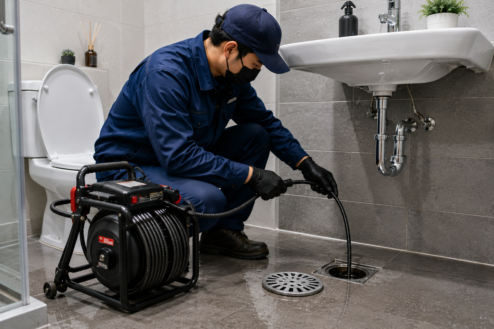
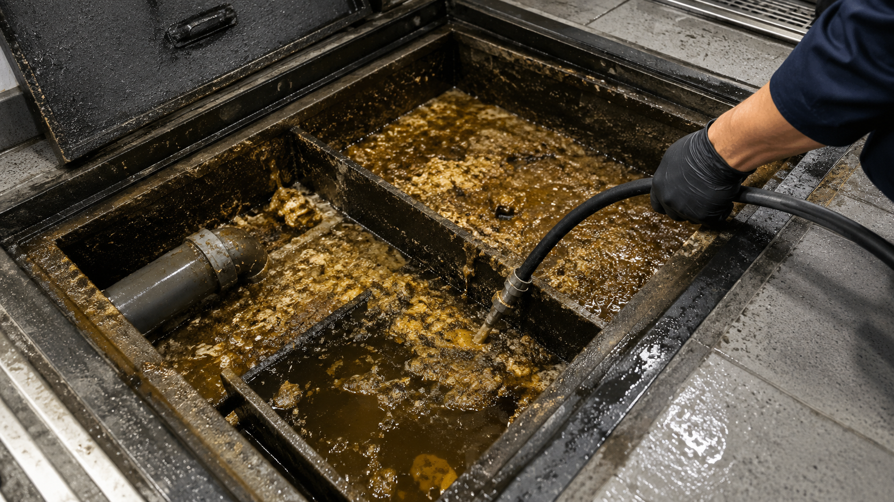
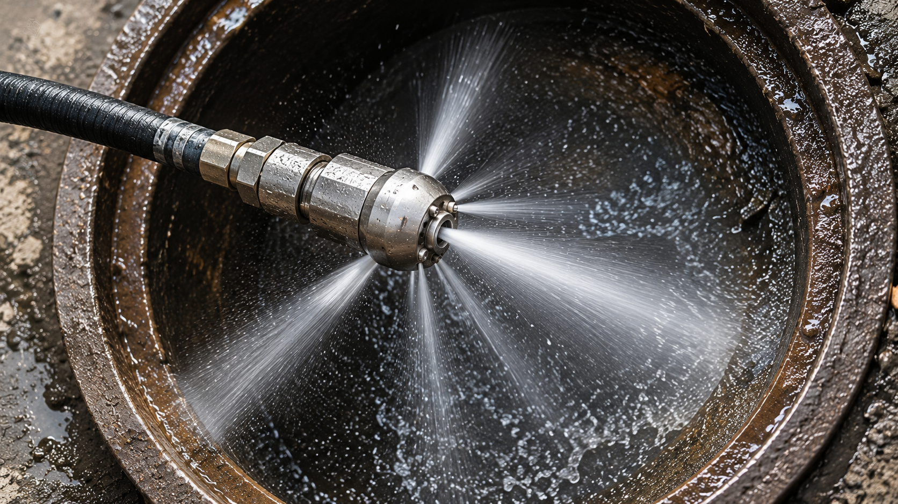
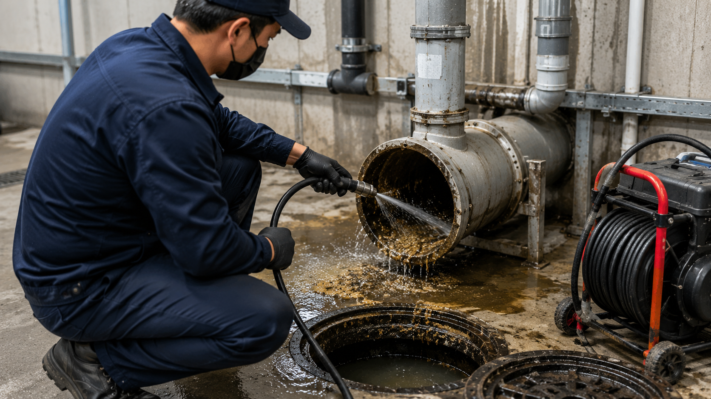
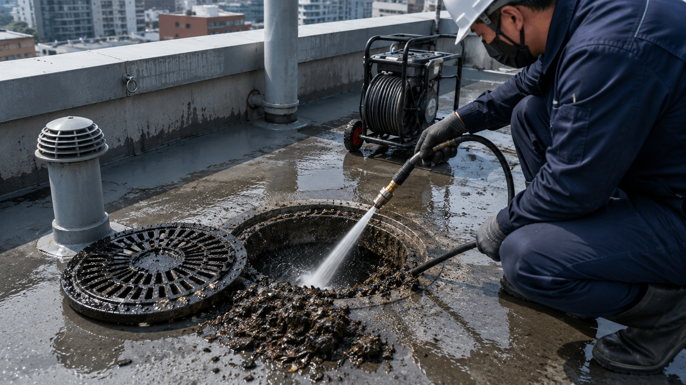
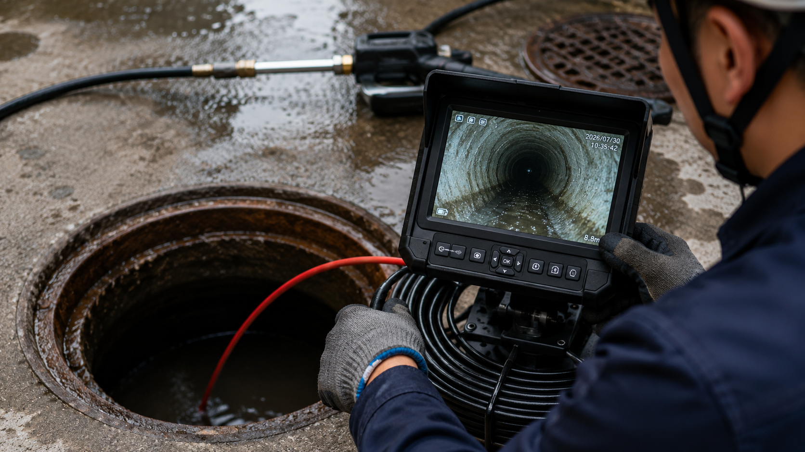

🚽
변기막힘
휴지뿐 아니라 칫솔, 휴지걸이 부품, 플라스틱 생활용품처럼 물에 녹지 않는 물체가 들어가면 반복 막힘으로 이어질 수 있습니다. 무리하게 밀어 넣기보다 이물질 위치와 회수 가능 여부를 확인합니다.
갑자기 물이 내려가지 않거나 다른 배수구로 역류하면 당황스러울 수 있습니다. 싱크대막힘·변기막힘·하수구악취부터 음식점 기름배관, 배관내시경, 고압세척과 건물 공용배관까지 증상과 구조에 맞는 확인 범위를 안내합니다.
드레인명장 전화 상담
같은 증상이라도 개별 배수관, 공용배관, 횡주관, 우수관처럼 확인해야 할 범위가 다릅니다. 드레인명장은 증상과 건물 구조를 함께 보고 필요한 작업 범위를 안내합니다.
하수구막힘이라고 해서 모든 현장의 원인이 같은 것은 아닙니다. 변기 내부에 단단한 이물질이 걸린 경우와 주방 배관에 기름이 누적된 경우, 욕실과 세탁실이 연결된 합류 배관이 좁아진 경우, 건물 공용 횡주관 자체에 슬러지가 쌓인 경우는 확인해야 할 위치와 작업 방식이 서로 다릅니다.
노원구하수구막힘 현장에서는 어느 공간에서 먼저 증상이 나타났는지, 한 배수구만 느린지 여러 곳이 동시에 반응하는지, 물을 많이 사용할 때만 역류하는지를 살펴보면서 문제 범위를 좁히는 과정이 중요합니다.

휴지뿐 아니라 칫솔, 휴지걸이 부품, 플라스틱 생활용품처럼 물에 녹지 않는 물체가 들어가면 반복 막힘으로 이어질 수 있습니다. 무리하게 밀어 넣기보다 이물질 위치와 회수 가능 여부를 확인합니다.
음식물 찌꺼기와 식용유, 동물성 기름, 세제 성분이 배관 벽면에 반복적으로 붙으면서 통로가 좁아질 수 있습니다. 트랩뿐 아니라 벽체 내부 배관과 합류 이후 구간도 확인할 수 있습니다.
머리카락과 비누 찌꺼기, 섬유 먼지 등이 누적될 수 있습니다. 세탁기 사용 때 욕실 배수구가 함께 반응한다면 두 공간이 합류하는 이후 배관의 흐름도 살펴봅니다.
변기 하나만 문제라면 가까운 구간부터 확인할 수 있지만, 싱크대·욕실·세탁실 또는 여러 점포가 동시에 영향을 받는다면 공용배관, 횡주관, 맨홀과 메인배관까지 확인 범위를 넓혀야 하는 경우가 있습니다.
음식점과 고깃집은 일반 가정집보다 물과 기름 사용량이 많습니다. 뜨거운 상태의 기름이 배관을 따라 이동하다가 온도가 내려가면 벽면에 달라붙을 수 있고, 그 위에 음식물 찌꺼기가 반복적으로 쌓이면 배수 통로가 점차 좁아질 수 있습니다.

기름과 음식물 유입
배관 내부 유지방 누적
배수 느림·역류 반복
여러 싱크대가 동시에 느려지거나 바닥 배수구까지 물이 올라온다면 주방 내부의 짧은 배관만이 아니라 합류 이후 배관이나 상가 공용배관까지 확인해야 하는 경우도 있습니다.
단순 관통 작업은 막힌 지점을 통과해 물길을 확보하는 데 초점을 두는 경우가 많습니다. 하지만 배관 벽면 전체에 기름과 슬러지가 넓게 붙은 현장에서는 가운데 통로만 일시적으로 열어도 오염물이 남아 다시 막힐 수 있습니다.

기름 슬러지와 침전물이 벽면에 넓게 누적되면 물이 지나갈 수 있는 실제 공간이 좁아질 수 있습니다.
현장 조건에 따라 고압 노즐을 배관 내부로 투입해 벽면의 오염물을 세척하면서 배관을 따라 작업 범위를 넓혀갑니다.
단순 이물질은 회수나 관통으로 처리할 수 있고, 배관 안에 오염물이 넓게 누적됐거나 짧은 기간 안에 막힘이 반복되는 현장에서는 내시경 확인과 고압세척 적용 여부를 함께 검토할 수 있습니다.
음식점·고깃집·상업용 주방처럼 기름 성분이 많은 배관은 일반 생활 배관과 오염 형태가 다를 수 있습니다. 드레인명장은 배관 재질과 노후 상태, 연결부 구조를 확인하고 현장에 따라 온수 고압세척 적용 여부를 검토합니다.
건물 안의 변기, 싱크대, 욕실, 세탁실 배수는 각각 따로 끝나는 것이 아니라 여러 배관을 거쳐 공용배관과 외부 배관으로 연결됩니다. 따라서 여러 층이나 여러 점포에서 동시에 문제가 나타난다면 개별 배수구보다 건물 전체 배관 구조를 살펴볼 필요가 있습니다.


한 세대가 아니라 같은 라인의 여러 공간에서 동시에 문제가 나타난다면 공용배관을 확인할 수 있습니다.
여러 세대와 점포의 배수가 합류하는 구간으로 오염 범위가 넓을 수 있습니다.
비가 많이 올 때만 옥상이나 외부 배수구가 넘친다면 우수관 흐름을 확인할 수 있습니다.
맨홀 내부뿐 아니라 앞뒤 연결 배관에도 침전물이 이어져 있는지 확인합니다.

반복 막힘, 이물질 위치, 내부 오염 상태를 직접 확인할 때 활용할 수 있습니다.
배관 벽면의 슬러지와 침전물을 넓은 구간에서 세척할 때 검토합니다.
기름 성분이 많은 상업용 배관에서 현장 조건에 따라 적용 여부를 판단합니다.
배관 상태와 오염 유형에 따라 기계식 청소 장비를 활용할 수 있습니다.
고여 있는 물과 오염물을 제거하거나 작업 공간을 확보할 때 활용할 수 있습니다.
국소적으로 막힌 지점의 물길을 확보하는 방식입니다.
배관 구경과 길이가 큰 현장은 점검구와 맨홀 위치를 함께 살펴봅니다.
외부에 매설된 배관은 위치와 접근 가능한 점검구를 먼저 파악해야 할 수 있습니다.
노원구는 원룸과 다세대주택, 오래된 빌라, 대학가 상권, 음식점과 소규모 상가가 한 생활권 안에 함께 분포해 있습니다. 같은 하수구막힘이라도 세대 내부의 짧은 가지배관 문제인지, 여러 세대가 연결된 공용배관 문제인지에 따라 확인 범위가 달라집니다. 물을 사용할 때 다른 배수구가 함께 반응하는지, 특정 시간대나 비가 오는 날에만 증상이 심해지는지까지 살펴보면 원인 구간을 좁히는 데 도움이 됩니다.
월계역 생활권 주변과 월계동 일대는 원룸, 다세대주택, 소형 상가가 밀집한 구간이 많습니다. 세탁기 사용 후 욕실 바닥배수구에서 물이 올라오거나, 싱크대 배수가 느려질 때 한 공간의 트랩만이 아니라 두 배수구가 합류한 이후 배관을 함께 확인해야 하는 경우가 있습니다.
여러 세대에서 비슷한 증상이 반복되면 세대 내부보다 수직관이나 횡주관 등 공용배관 범위까지 살펴볼 필요가 있습니다.
공릉동과 공릉역 생활권 주변은 주택가와 음식점, 카페, 소규모 상가가 가까이 연결되어 있습니다. 영업시간에만 바닥배수구가 넘치거나 여러 싱크대가 동시에 느려지는 경우에는 주방 내부 배관뿐 아니라 합류 이후 기름 슬러지와 공용배관 상태를 확인합니다.
오래된 건물은 배관 구경과 기울기, 점검구 위치가 현장마다 달라 장비를 투입하기 전에 배관 구조를 먼저 파악하는 과정이 중요합니다.
상계동과 서울대학교 주변 자취 생활권은 짧은 기간 여러 사용자가 바뀌는 원룸과 다가구주택이 많아 음식물, 기름, 세제, 섬유 먼지가 복합적으로 누적될 수 있습니다. 싱크대만 느린지, 세탁실이나 욕실까지 함께 반응하는지에 따라 확인할 배관이 달라집니다.
반복 막힘은 가운데 물길만 열린 상태일 수 있어 배관내시경이나 세척 적용 여부를 현장 상태에 따라 검토합니다.
중계역 생활권, 월계동, 상계동 일대는 아파트와 빌라, 다세대주택이 섞여 있습니다. 한 세대의 배수구만 느리다면 가까운 가지배관부터 확인할 수 있지만, 같은 라인의 여러 세대에서 동시에 역류하거나 꿀렁거림이 나타나면 수직관과 횡주관 등 공용배관 범위로 점검을 넓힙니다.
관리사무소나 건물주가 문의하는 현장은 점검구와 맨홀 위치, 최근 배관 작업 이력을 함께 확인하면 원인 구간을 판단하는 데 도움이 됩니다.
하계동은 주택과 빌라, 상가가 혼재하고 하계역 생활권 생활권과도 맞닿아 있습니다. 변기막힘처럼 한 기구에서 시작된 문제라도 다른 배수구까지 영향을 받는다면 개별 기구보다 연결 배관의 흐름을 함께 살펴봅니다.
지하층이나 저층 상가는 외부 맨홀과 메인배관의 수위 변화가 역류에 영향을 줄 수 있어 건물 내부와 외부 배수 흐름을 나눠 확인합니다.
노원산과 가까운 주택가, 월계동·난향동 일대는 옥상과 외부 배수구로 낙엽, 흙, 모래가 유입될 수 있습니다. 평소에는 문제가 없지만 비가 많이 올 때 옥상이나 지하 공간에 물이 고인다면 우수관과 하부 연결부, 외부 맨홀의 흐름을 확인합니다.
우수관은 짧은 구간만 뚫는 것보다 수직관 전체와 배출 지점까지 막힘이 이어져 있는지 살펴보는 것이 중요합니다.
증상이 여러 곳에서 함께 나타난다면 공용배관까지 확인해야 할 수 있습니다.
막힘은 완전히 물이 내려가지 않을 때만 시작되는 것이 아닙니다. 배수 속도 저하, 악취, 꿀렁거림, 다른 배수구의 수위 변화처럼 작은 신호가 먼저 나타나는 경우도 많습니다.
같은 역류 증상이라도 원룸과 빌라, 아파트, 음식점, 카페, 학원처럼 건물의 사용 방식이 다르면 막힘이 생기는 위치와 확인해야 할 배관 범위도 달라집니다. 아래 내용은 노원구에서 자주 접하는 건물 유형을 기준으로 정리한 안내입니다.
세탁기, 욕실, 싱크대가 짧은 구간에서 합류하는 구조가 많습니다. 한 공간의 막힘처럼 보여도 합류 이후 배관에 비누 찌꺼기와 섬유 먼지가 쌓였는지 확인해야 할 수 있습니다.
여러 세대가 수직관과 횡주관을 함께 사용합니다. 위아래 세대에서 꿀렁거림이나 역류가 동시에 나타나면 세대 내부보다 공용배관 범위를 우선 살펴봅니다.
오랜 사용으로 배관 내부에 스케일과 슬러지가 넓게 남아 있을 수 있습니다. 관리사무소와 점검구 위치, 같은 라인의 증상 여부를 함께 확인하면 원인 구간을 좁히는 데 도움이 됩니다.
입주 초기에는 공사 잔재물이나 이물질, 기구 연결부 문제를 함께 확인합니다. 무조건 노후 배관으로 판단하지 않고 설치 상태와 사용 구간을 나눠 살펴봅니다.
소형 주거공간이 수직으로 밀집해 있어 한 세대의 배수 문제가 아래층이나 공용배관에 영향을 줄 수 있습니다. 세대 내부와 공용부의 책임 범위를 구분해 점검하는 과정이 중요합니다.
기름과 음식물 사용량이 많아 배관 벽면에 유지방 슬러지가 빠르게 쌓일 수 있습니다. 영업시간에만 역류하는지, 여러 싱크대가 함께 느려지는지를 확인합니다.
커피 찌꺼기, 우유 성분, 반죽 잔여물과 세제가 합류배관에 누적될 수 있습니다. 싱크대와 제빙기, 바닥배수구가 함께 느려지는지 살펴봅니다.
머리카락과 염색약, 샴푸 잔여물이 샴푸대와 바닥배수구 배관에 쌓일 수 있습니다. 여러 샴푸대를 사용할 때만 문제가 커지는지도 중요한 단서가 됩니다.
진료공간과 세척공간, 화장실 배관이 나뉘어 있을 수 있어 증상이 시작된 구간을 먼저 분리해 확인합니다. 운영 중단을 줄이기 위한 작업 동선도 함께 고려합니다.
짧은 시간에 화장실 사용이 몰리면 부분 막힘이 빠르게 드러날 수 있습니다. 여러 변기나 세면대가 동시에 반응하는지 확인해 공용배관 문제를 구분합니다.
주말과 행사 시간에 사용량이 급증하는 시설은 평소에는 괜찮다가 특정 시간대에만 역류할 수 있습니다. 화장실과 주방, 외부 맨홀의 흐름을 함께 살펴봅니다.
점포별 가지배관과 건물 공용배관이 복잡하게 연결될 수 있습니다. 한 점포만의 문제인지 여러 층이 연결된 메인배관 문제인지 구분하는 점검이 필요합니다.
아래 내용은 노원구의 건물 유형과 생활권에서 발생할 수 있는 대표적인 상황을 사례 형식으로 정리한 안내입니다. 실제 원인과 작업 방법은 현장 배관 구조, 오염 범위와 접근 가능한 점검구에 따라 달라질 수 있습니다.
세탁기를 돌릴 때마다 욕실 바닥배수구로 물이 올라오는 상황입니다. 세탁기 배수구와 욕실 배수구가 합류한 이후 구간에 섬유 먼지와 비누 찌꺼기가 누적됐는지 확인하고, 가까운 트랩부터 합류배관까지 점검 범위를 넓힙니다.
영업 준비와 피크 시간대에 여러 싱크대의 배수가 느려지고 바닥배수구까지 물이 올라오는 유형입니다. 주방 내부 배관과 합류 이후 구간의 유지방 슬러지 범위를 살펴보고, 단순 관통으로 충분한지 고압세척 또는 온수 고압세척이 필요한지 판단합니다.
배수제를 사용한 뒤 잠시 좋아졌다가 다시 느려지는 상황입니다. 트랩과 짧은 가지배관만의 문제인지, 벽체 안쪽 배관 벽면에 기름과 음식물이 넓게 남아 있는지 확인해 재발 가능성을 구분합니다.
한 세대가 아니라 위아래 여러 세대에서 꿀렁거림과 배수 지연이 함께 나타나는 유형입니다. 세대 내부 작업을 반복하기보다 수직관, 횡주관과 외부 맨홀의 흐름을 단계적으로 확인해 공용 구간의 막힘 가능성을 살펴봅니다.
건물 사용량이 많아지는 시간에 화장실 바닥배수구 수위가 올라오는 상황입니다. 개별 변기나 바닥배수구뿐 아니라 공용 오수관과 외부 맨홀 수위, 건물 메인배관의 배출 상태까지 함께 확인합니다.
평소에는 문제가 없지만 집중호우 때 옥상에 물이 빠르게 고이는 유형입니다. 옥상 배수구의 낙엽과 흙만 제거하는 데 그치지 않고, 수직 우수관과 하부 연결부, 외부 배출구까지 흐름이 이어지는지 확인합니다.
싱크대와 제빙기, 바닥배수구가 연결된 구간에서 배수가 함께 느려지는 상황입니다. 커피 찌꺼기와 우유 성분, 세제 찌꺼기가 합류부에 누적됐는지 살펴보고 배관내시경과 세척 장비의 적용 여부를 구분합니다.
칫솔이나 플라스틱 부품처럼 물에 녹지 않는 물체가 변기 굴곡에 걸리면 휴지와 다른 이물질이 추가로 붙어 반복 막힘이 생길 수 있습니다. 무리하게 밀어 넣지 않고 위치와 회수 가능 여부를 확인한 뒤 정상 배수를 점검합니다.
세면대 물을 사용할 때 욕실 바닥배수구가 꿀렁거리며 배수가 늦어지는 유형입니다. 두 배수구가 합류하는 이후 구간에 비누 찌꺼기와 생활 오염물이 누적됐는지 확인합니다.
물이 내려가기는 하지만 냄새가 반복되고 배수 속도가 점점 느려지는 상황입니다. 트랩과 연결부, 벽체 안쪽 배관의 오염 상태와 봉수 유지 여부를 함께 살펴봅니다.
저층 세대에서 먼저 역류가 나타나고 위층에서도 배수 지연이 확인되는 유형입니다. 세대 내부보다 건물 하부 횡주관과 외부 맨홀의 흐름을 우선 점검합니다.
여러 샴푸대를 사용할 때 배수가 급격히 느려지는 상황입니다. 머리카락과 샴푸, 염색약 잔여물이 합류배관에 쌓였는지 확인하고 필요한 작업 범위를 정합니다.
특정 변기 하나가 아니라 여러 칸의 물빠짐이 동시에 떨어지는 유형입니다. 개별 기구보다 공용 수평배관과 수직관 연결부를 중심으로 확인합니다.
평소에는 괜찮지만 주말 행사 후 바닥배수구 수위가 올라오는 상황입니다. 순간 사용량과 공용배관의 배출 능력, 외부 맨홀 상태를 함께 살펴봅니다.
변기를 사용하지 않아도 수위가 흔들리고 다른 배수구 사용 시 꿀렁거리는 유형입니다. 변기 연결부와 공용배관의 압력 변화, 통기 상태를 확인합니다.
제빙기 배수가 시작될 때 바닥배수구로 물이 올라오는 상황입니다. 제빙기와 싱크대가 합류하는 구간의 찌꺼기와 배관 기울기를 확인합니다.
커피 찌꺼기와 음식물 잔여물이 소형 배관에 누적되어 물이 천천히 내려가는 유형입니다. 트랩과 벽체 안쪽 가지배관을 순서대로 살펴봅니다.
수업 전후로 여러 세면대의 배수가 느려지는 상황입니다. 짧은 시간 사용량이 몰릴 때 공용배관의 부분 막힘이 드러나는지 확인합니다.
청소 후에도 악취가 반복되는 유형입니다. 배수구 트랩의 봉수 상태와 배관 내부 오염, 공용배관 압력 변화 가능성을 함께 살펴봅니다.
점포 내부 배수구가 여러 곳에서 동시에 느려지고 외부 맨홀 수위가 높게 유지되는 상황입니다. 맨홀 내부 침전물과 앞뒤 메인배관의 배출 상태를 함께 확인합니다.
증상이 시작된 위치와 물을 사용할 때 함께 반응하는 공간을 알려주시면 확인 범위를 잡는 데 도움이 됩니다.
실제 고객 후기가 확보되면 개인정보를 가린 뒤 이 영역에 넣을 수 있습니다. 아래 내용은 홈페이지 구성 예시이며 실제 고객 후기라고 표시하지 않습니다.
같은 하수구막힘이라도 한 곳만 느린지, 여러 배수구가 함께 역류하는지, 비가 올 때만 문제가 생기는지에 따라 점검 범위가 달라집니다. 증상과 건물 구조를 함께 살펴 단순 관통, 이물질 회수, 배관내시경, 고압세척 중 필요한 방법을 구분합니다.
한 배수구만 느리다면 가까운 트랩이나 가지배관을, 여러 곳이 동시에 느리다면 합류부와 공용배관까지 확인합니다.
싱크대나 세탁기 사용 때 다른 배수구로 물이 올라오면 연결 이후 구간의 막힘 가능성을 살펴봅니다.
옥상 배수구, 우수관, 외부 맨홀의 낙엽·토사·침전물과 배수 용량을 함께 확인합니다.
기름과 음식물이 배관 벽면에 넓게 쌓였는지 확인하고 필요할 때 고압세척 또는 온수 고압세척을 검토합니다.
세대 내부만이 아니라 수직관·횡주관·메인배관·맨홀까지 공용 구간을 단계적으로 살펴봅니다.
물길만 일시적으로 열린 상태인지, 배관 벽면의 슬러지·파손·기울기 문제까지 남아 있는지 확인합니다.
아래 증상은 원인을 확정하는 기준이 아니라, 어느 배관 범위부터 확인할지 정리하는 참고 항목입니다.
기름 슬러지 또는 배관 내부 오염 가능성을 먼저 점검합니다.
트랩 이상, 배관 오염, 환기 문제를 함께 확인합니다.
공용배관 또는 주배관 문제 여부를 확인하는 것이 좋습니다.
우수관 및 배수 시스템 상태를 함께 점검합니다.
같은 역류 증상도 어느 배관에서 문제가 생겼는지에 따라 점검 범위와 작업 방법이 달라집니다. 상담 전에 자주 쓰이는 배관 용어를 쉽게 정리했습니다.
싱크대·세면대·세탁기처럼 한 공간의 배수구에서 시작되는 배관입니다. 한 곳만 느리거나 막힐 때 먼저 확인합니다.
여러 세대나 여러 배수구가 함께 사용하는 배관입니다. 같은 라인의 여러 곳에서 동시에 문제가 생기면 확인 범위가 넓어집니다.
건물 아래쪽이나 천장 내부를 수평으로 지나가는 큰 배관입니다. 기름 슬러지와 침전물이 쌓이면 여러 공간에서 역류할 수 있습니다.
위아래 층을 연결하는 수직 배관입니다. 특정 층만이 아니라 같은 라인에서 반복 증상이 나타날 때 연관성을 살펴봅니다.
화장실과 생활 오수를 배출하는 배관입니다. 변기 수위 변화, 악취, 바닥배수구 역류가 함께 나타날 때 연결 상태를 확인합니다.
옥상과 베란다의 빗물을 배출하는 배관입니다. 장마철이나 폭우 때만 물이 넘친다면 낙엽·토사·침전물을 점검합니다.
배관 냄새와 해충이 실내로 올라오는 것을 막는 물막이 구조입니다. 물이 마르거나 압력 균형이 깨지면 악취가 느껴질 수 있습니다.
건물 외부 배관의 흐름과 침전 상태를 확인하는 점검 지점입니다. 건물 전체 배수가 느리거나 외부로 넘칠 때 함께 살펴봅니다.
무조건 같은 장비를 사용하는 대신 증상, 배관 구조, 오염 범위를 순서대로 확인해 필요한 작업 범위를 판단합니다.
언제부터, 어느 공간에서, 어떤 물 사용 뒤 문제가 나타나는지 확인합니다.
물을 흘려보내 배수 속도와 다른 배수구의 반응을 함께 살펴봅니다.
개별 배수관인지 공용배관·횡주관·맨홀까지 연결된 문제인지 구분합니다.
내시경, 관통 장비, 샤프트, 석션, 고압세척 중 현장에 맞는 방식을 정합니다.
물길만 여는 데 그치지 않고 확인된 원인과 누적 범위에 맞춰 작업합니다.
작업 후 여러 번 물을 사용해 배수 속도와 역류 여부를 다시 확인합니다.
기름·음식물·머리카락·낙엽 등 현장 원인에 맞는 재발 방지 방법을 안내합니다.
오랫동안 사용하지 않은 배수구의 봉수 상태와 싱크대·세탁실 배수 속도를 확인합니다.
옥상·베란다 배수구 주변 낙엽과 토사를 치우고, 비가 오기 전 우수관 흐름을 살펴봅니다.
노원산 인접 주택과 저층 건물은 낙엽이 우수구와 외부 맨홀로 들어가지 않도록 관리합니다.
낮은 온도에서 주방 기름이 배관 벽면에 더 쉽게 굳을 수 있어 음식점과 가정 주방의 관리가 중요합니다.
현장마다 모든 장비를 사용하는 것은 아닙니다. 증상을 듣고 배관 구조를 확인한 뒤 필요한 범위와 장비를 정합니다.
노원구는 공릉동·월계동·하계동을 중심으로 보라매동, 하계동, 중계동, 공릉동, 청림동, 상계동, 하계동, 중계동, 월계동, 월계동, 공릉동, 하계동, 월계동, 상계동, 신원동, 중계동, 공릉동, 상계동, 난향동 등 다양한 생활권으로 이루어져 있습니다.
공릉동 하수구막힘, 공릉동 싱크대막힘, 공릉동 변기막힘, 공릉동 고압세척과 함께 중계동·상계동·하계동·월계동의 주택, 빌라, 아파트, 음식점과 상가 배관을 살펴봅니다.
월계동 하수구막힘, 월계동 싱크대막힘, 월계동 고압세척, 월계동 우수관막힘을 비롯해 월계동·중계동·상계동·신원동 등 여러 생활권의 배관 문제를 안내합니다.
하계동 하수구막힘, 하계동 변기막힘, 하계동 배관청소, 고압세척, 우수관과 건물 공용배관 등 현장 구조에 따라 필요한 확인 범위를 나눠봅니다.
노원구 음식점 하수구막힘, 노원구 하수구고압세척, 노원구 횡주관, 우수관, 오수관, 맨홀, 건물 전체 배관청소와 내시경 점검까지 폭넓게 안내합니다.
변기 안에 항상 남아 있는 물은 단순히 고여 있는 물이 아닙니다. 배관에서 올라오는 냄새와 공기의 이동을 막아주는 봉수 역할을 합니다.
막힘 위치와 오염물 종류에 따라 적합한 장비가 다르므로 증상 확인 없이 작업 방법부터 정하는 상담은 주의해서 살펴보는 것이 좋습니다.
개별 배수관, 공용배관, 횡주관, 외부 맨홀 중 어디까지 확인하는지 설명을 들으면 작업 필요성을 이해하기 쉽습니다.
작업 직후 물을 흘려보내 배수 속도와 역류 여부를 다시 확인하는 과정이 포함되는지 확인해보세요.
봉천 / 공릉동 · 신림 / 월계동 · 남현 / 하계동 · 보라매 / 보라매동처럼 동 이름을 붙인 표현과 생략한 생활권 표현을 함께 반영했습니다. 각 지역의 막힘 증상과 작업 유형을 자연스럽게 연결해 안내합니다.
봉천하수구막힘 · 공릉동하수구막힘 · 봉천싱크대막힘 · 공릉동싱크대막힘 · 봉천변기막힘 · 공릉동변기막힘 · 봉천배관고압세척 · 공릉동배관고압세척 · 봉천하수구역류 · 공릉동하수구역류 · 봉천배관내시경 · 공릉동배관내시경 · 신림하수구막힘 · 월계동하수구막힘 · 신림싱크대막힘 · 월계동싱크대막힘 · 신림변기막힘 · 월계동변기막힘 · 신림배관고압세척 · 월계동배관고압세척 · 신림하수구역류 · 월계동하수구역류 · 신림배관내시경 · 월계동배관내시경 · 남현하수구막힘 · 하계동하수구막힘 · 남현싱크대막힘 · 하계동싱크대막힘 · 남현변기막힘 · 하계동변기막힘 · 남현배관고압세척 · 하계동배관고압세척 · 남현하수구역류 · 하계동하수구역류 · 남현배관내시경 · 하계동배관내시경
보라매하수구막힘 · 보라매동하수구막힘 · 보라매싱크대막힘 · 보라매동싱크대막힘 · 보라매변기막힘 · 보라매동변기막힘 · 보라매배관고압세척 · 보라매동배관고압세척 · 보라매하수구역류 · 보라매동하수구역류 · 보라매배관내시경 · 보라매동배관내시경 · 은천하수구막힘 · 하계동하수구막힘 · 은천싱크대막힘 · 하계동싱크대막힘 · 은천변기막힘 · 하계동변기막힘 · 은천배관고압세척 · 하계동배관고압세척 · 은천하수구역류 · 하계동하수구역류 · 은천배관내시경 · 하계동배관내시경 · 성현하수구막힘 · 중계동하수구막힘 · 성현싱크대막힘 · 중계동싱크대막힘 · 성현변기막힘 · 중계동변기막힘 · 성현배관고압세척 · 중계동배관고압세척 · 성현하수구역류 · 중계동하수구역류 · 성현배관내시경 · 중계동배관내시경
중앙하수구막힘 · 공릉동하수구막힘 · 중앙싱크대막힘 · 공릉동싱크대막힘 · 중앙변기막힘 · 공릉동변기막힘 · 중앙배관고압세척 · 공릉동배관고압세척 · 중앙하수구역류 · 공릉동하수구역류 · 중앙배관내시경 · 공릉동배관내시경 · 청림하수구막힘 · 청림동하수구막힘 · 청림싱크대막힘 · 청림동싱크대막힘 · 청림변기막힘 · 청림동변기막힘 · 청림배관고압세척 · 청림동배관고압세척 · 청림하수구역류 · 청림동하수구역류 · 청림배관내시경 · 청림동배관내시경 · 행운하수구막힘 · 상계동하수구막힘 · 행운싱크대막힘 · 상계동싱크대막힘 · 행운변기막힘 · 상계동변기막힘 · 행운배관고압세척 · 상계동배관고압세척 · 행운하수구역류 · 상계동하수구역류 · 행운배관내시경 · 상계동배관내시경
청룡하수구막힘 · 하계동하수구막힘 · 청룡싱크대막힘 · 하계동싱크대막힘 · 청룡변기막힘 · 하계동변기막힘 · 청룡배관고압세척 · 하계동배관고압세척 · 청룡하수구역류 · 하계동하수구역류 · 청룡배관내시경 · 하계동배관내시경 · 낙성대하수구막힘 · 중계동하수구막힘 · 낙성대싱크대막힘 · 중계동싱크대막힘 · 낙성대변기막힘 · 중계동변기막힘 · 낙성대배관고압세척 · 중계동배관고압세척 · 낙성대하수구역류 · 중계동하수구역류 · 낙성대배관내시경 · 중계동배관내시경 · 인헌하수구막힘 · 월계동하수구막힘 · 인헌싱크대막힘 · 월계동싱크대막힘 · 인헌변기막힘 · 월계동변기막힘 · 인헌배관고압세척 · 월계동배관고압세척 · 인헌하수구역류 · 월계동하수구역류 · 인헌배관내시경 · 월계동배관내시경
신사하수구막힘 · 월계동하수구막힘 · 신사싱크대막힘 · 월계동싱크대막힘 · 신사변기막힘 · 월계동변기막힘 · 신사배관고압세척 · 월계동배관고압세척 · 신사하수구역류 · 월계동하수구역류 · 신사배관내시경 · 월계동배관내시경 · 조원하수구막힘 · 공릉동하수구막힘 · 조원싱크대막힘 · 공릉동싱크대막힘 · 조원변기막힘 · 공릉동변기막힘 · 조원배관고압세척 · 공릉동배관고압세척 · 조원하수구역류 · 공릉동하수구역류 · 조원배관내시경 · 공릉동배관내시경 · 미성하수구막힘 · 하계동하수구막힘 · 미성싱크대막힘 · 하계동싱크대막힘 · 미성변기막힘 · 하계동변기막힘 · 미성배관고압세척 · 하계동배관고압세척 · 미성하수구역류 · 하계동하수구역류 · 미성배관내시경 · 하계동배관내시경
난곡하수구막힘 · 월계동하수구막힘 · 난곡싱크대막힘 · 월계동싱크대막힘 · 난곡변기막힘 · 월계동변기막힘 · 난곡배관고압세척 · 월계동배관고압세척 · 난곡하수구역류 · 월계동하수구역류 · 난곡배관내시경 · 월계동배관내시경 · 서원하수구막힘 · 상계동하수구막힘 · 서원싱크대막힘 · 상계동싱크대막힘 · 서원변기막힘 · 상계동변기막힘 · 서원배관고압세척 · 상계동배관고압세척 · 서원하수구역류 · 상계동하수구역류 · 서원배관내시경 · 상계동배관내시경 · 신원하수구막힘 · 신원동하수구막힘 · 신원싱크대막힘 · 신원동싱크대막힘 · 신원변기막힘 · 신원동변기막힘 · 신원배관고압세척 · 신원동배관고압세척 · 신원하수구역류 · 신원동하수구역류 · 신원배관내시경 · 신원동배관내시경
서림하수구막힘 · 중계동하수구막힘 · 서림싱크대막힘 · 중계동싱크대막힘 · 서림변기막힘 · 중계동변기막힘 · 서림배관고압세척 · 중계동배관고압세척 · 서림하수구역류 · 중계동하수구역류 · 서림배관내시경 · 중계동배관내시경 · 삼성하수구막힘 · 공릉동하수구막힘 · 삼성싱크대막힘 · 공릉동싱크대막힘 · 삼성변기막힘 · 공릉동변기막힘 · 삼성배관고압세척 · 공릉동배관고압세척 · 삼성하수구역류 · 공릉동하수구역류 · 삼성배관내시경 · 공릉동배관내시경 · 대학하수구막힘 · 상계동하수구막힘 · 대학싱크대막힘 · 상계동싱크대막힘 · 대학변기막힘 · 상계동변기막힘 · 대학배관고압세척 · 상계동배관고압세척 · 대학하수구역류 · 상계동하수구역류 · 대학배관내시경 · 상계동배관내시경
난향하수구막힘 · 난향동하수구막힘 · 난향싱크대막힘 · 난향동싱크대막힘 · 난향변기막힘 · 난향동변기막힘 · 난향배관고압세척 · 난향동배관고압세척 · 난향하수구역류 · 난향동하수구역류 · 난향배관내시경 · 난향동배관내시경
지역 검색에서는 ‘역삼동하수구막힘’처럼 동을 붙인 표현과 ‘역삼하수구막힘’처럼 동을 생략한 생활권 표현이 함께 사용됩니다. 아래에서는 노원구 주요 생활권과 하수구막힘, 싱크대막힘, 변기막힘, 식당배관, 고압세척, 배관내시경 관련 정보를 확인할 수 있습니다.
월계하수구막힘, 월계동하수구막힘, 월계싱크대막힘, 월계동싱크대막힘
공릉변기막힘, 공릉동변기막힘, 공릉배수구역류, 공릉동배수구역류
하계배관고압세척, 하계동배관고압세척, 하계배관내시경, 하계동배관내시경
중계식당하수구막힘, 중계동식당하수구막힘, 중계배관청소, 중계동배관청소
상계하수도막힘, 상계동하수도막힘, 상계우수관막힘, 상계동우수관막힘
월계하수구막힘, 월계동하수구막힘, 월계싱크대막힘, 월계동싱크대막힘
공릉변기막힘, 공릉동변기막힘, 공릉배수구역류, 공릉동배수구역류
하계배관고압세척, 하계동배관고압세척, 하계배관내시경, 하계동배관내시경
중계식당하수구막힘, 중계동식당하수구막힘, 중계배관청소, 중계동배관청소
상계하수도막힘, 상계동하수도막힘, 상계우수관막힘, 상계동우수관막힘
배수 속도가 지속적으로 느려졌다면 배수구나 배관 내부에 오염물이 누적되고 있을 가능성을 확인할 수 있습니다.
가운데 물길만 일시적으로 열리고 배관 벽면의 기름 슬러지가 남아 있다면 다시 음식물 찌꺼기가 붙으면서 막힘이 반복될 수 있습니다.
배관 내부에 슬러지와 오염물이 넓게 누적됐거나 단순 관통 후에도 문제가 반복되는 경우 적용 여부를 검토할 수 있습니다.
일반 관통은 막힌 지점의 물길 확보에 초점을 두는 경우가 많고, 고압세척은 배관 내부 벽면의 오염물을 넓은 구간에서 세척하는 방식입니다.
음식점이나 고깃집처럼 기름 성분이 많은 배관에서 현장 배관 상태를 확인한 뒤 적용 여부를 판단할 수 있습니다.
가정집보다 기름과 음식물 사용량이 많아 배관 벽면에 유지방 슬러지가 빠르게 누적될 수 있기 때문입니다.
각 싱크대가 따로 막힌 경우도 있지만 여러 배관이 합류한 이후 구간이나 공용배관을 확인할 필요가 있습니다.
여러 세대나 점포에서 내려온 배수를 건물 내부에서 수평으로 모으는 공용배관 구간을 말합니다.
여러 공간에서 동시에 물빠짐이 떨어지거나 바닥 배수구 역류가 나타날 수 있습니다.
옥상이나 외부 빗물받이를 통해 유입된 빗물을 아래쪽으로 내려보내는 배관입니다.
평소보다 많은 물이 한꺼번에 유입되면서 이미 좁아진 우수관 구간의 배수 능력이 부족해질 수 있습니다.
맨홀 내부 침전물이 원인이라면 청소가 필요할 수 있지만 앞뒤 연결 배관까지 막혀 있다면 해당 구간도 함께 확인해야 합니다.
반복 막힘, 이물질 위치, 대형배관 내부 상태처럼 직접 내부를 확인할 필요가 있을 때 활용할 수 있습니다.
단단한 물체가 더 깊이 이동할 수 있으므로 반복해서 물을 내리기보다 위치와 회수 가능 여부를 확인하는 것이 좋습니다.
물체의 위치와 형태에 따라 접근 방식이 달라질 수 있으며 무리하게 밀어 넣지 않고 회수 가능 여부를 확인합니다.
세탁실과 욕실이 연결된 이후 구간의 배수 흐름이 떨어져 다른 배수구로 물이 밀리는 경우가 있을 수 있습니다.
개별 세대의 문제뿐 아니라 수직관, 횡주관 또는 메인배관 등 건물 공용배관 범위까지 살펴볼 수 있습니다.
배관 구경과 길이, 점검구 위치, 매설 여부 등을 확인한 뒤 현장 조건에 맞는 장비와 방법을 검토할 수 있습니다.
배관 벽면에 기름 슬러지와 침전물이 남아 있다면 다시 찌꺼기가 붙어 짧은 기간 안에 문제가 반복될 수 있습니다.
급수 문제일 수도 있지만 봉수 유지 상태, 연결 배관과 압력 변화 등 배수 쪽 조건이 영향을 주는 경우도 확인할 수 있습니다.
변기 자체 문제나 배관 압력 변화, 통기 조건 등 여러 원인이 있을 수 있어 반복된다면 현장 조건을 함께 확인하는 것이 좋습니다.
변기 트랩에 남아 있어야 할 물이 충분하지 않으면 배관 쪽 공기와 냄새를 차단하는 기능이 약해질 수 있습니다.
공용배관의 공기와 압력 변화가 변기 봉수에 영향을 주는 경우가 있을 수 있어 연결 배관 상태를 함께 살펴봅니다.
노원구의 주택, 빌라, 아파트, 상가, 음식점, 사무실 등 다양한 현장의 배관 문제를 기준으로 안내하고 있습니다.
작업한 배수구뿐 아니라 필요한 경우 연결 배수구, 공용배관, 외부 맨홀까지 배수 흐름을 함께 확인합니다.
세탁기 배수구와 욕실 배수구가 합류한 이후 구간을 우선 확인하고, 여러 세대가 함께 반응하면 공용배관까지 범위를 넓힐 수 있습니다.
사용자가 자주 바뀌는 원룸은 음식물, 기름, 세제, 섬유 먼지가 복합적으로 쌓일 수 있어 배관 벽면의 오염 범위를 함께 살펴보는 것이 좋습니다.
모든 현장에 필요한 것은 아닙니다. 유지방 슬러지의 두께와 배관 재질, 길이, 접근 위치를 확인한 뒤 적용 여부를 판단합니다.
저층이 건물 공용배관과 가까워 먼저 증상이 나타나는 경우도 있습니다. 위층의 배수 상태와 외부 맨홀 수위를 함께 확인해야 구분할 수 있습니다.
배수는 가능해도 트랩 봉수가 마르거나 배관 내부 오염물이 부패해 냄새가 날 수 있습니다. 악취 원인과 배수 상태를 나눠 확인합니다.
낙엽과 토사가 미리 쌓여 있다가 소량의 물에도 배수가 늦어질 수 있습니다. 장마 전 점검으로 수직관과 하부 연결부를 확인할 수 있습니다.
내시경은 내부 상태와 이물질 위치를 확인하는 장비입니다. 실제 제거와 세척에는 별도의 관통, 석션, 샤프트 또는 고압세척 작업이 필요할 수 있습니다.
현장 동선과 배수 사용량을 확인해 가능한 범위를 조율할 수 있습니다. 다만 안전과 작업 효율을 위해 일부 구간 사용을 잠시 제한해야 할 수 있습니다.
증상만으로는 막힌 위치와 배관 길이, 장비 투입 여부를 확정하기 어려울 수 있습니다. 현장 조건과 작업 범위를 확인한 뒤 안내하는 방식이 일반적입니다.
아닙니다. 월계동 원룸, 공릉동 상가, 낙성대 빌라, 월계동 주택처럼 건물 유형과 배관 구조가 달라 현장에 맞춰 확인 순서와 장비를 정합니다.
이 페이지는 노원구와 공릉동, 봉천처럼 동 표기 여부가 다른 생활권 검색어를 함께 고려해 구성했습니다. 다만 검색 노출 여부는 검색엔진의 색인과 콘텐츠 평가에 따라 달라질 수 있습니다.
물이 천천히 내려가거나 다른 배수구로 역류하는 증상은 막힌 위치와 연결 배관에 따라 필요한 작업이 달라질 수 있습니다.
단순 변기막힘부터 식당 기름배관·고압세척·건물 전체 배관까지
1877-8196클릭 시 바로 전화 연결됩니다실제 작업 범위와 방법은 현장의 배관 구조 및 상태에 따라 달라질 수 있습니다.